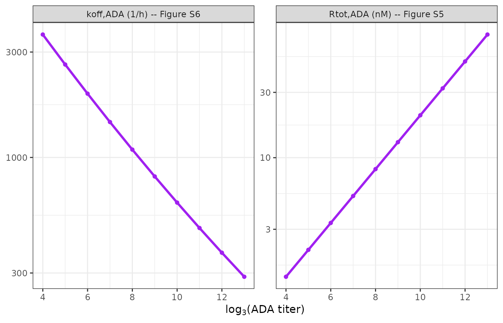
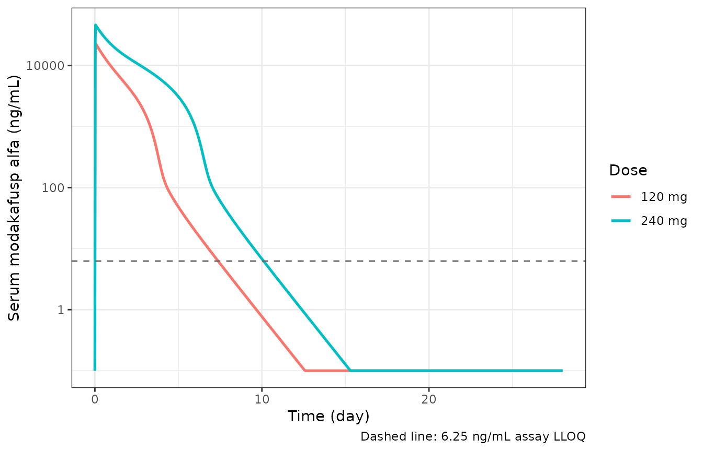
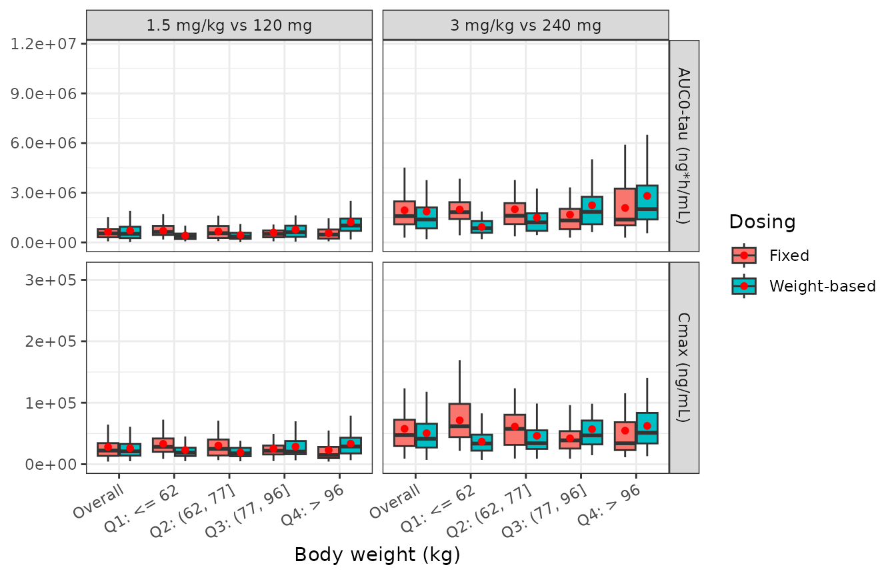
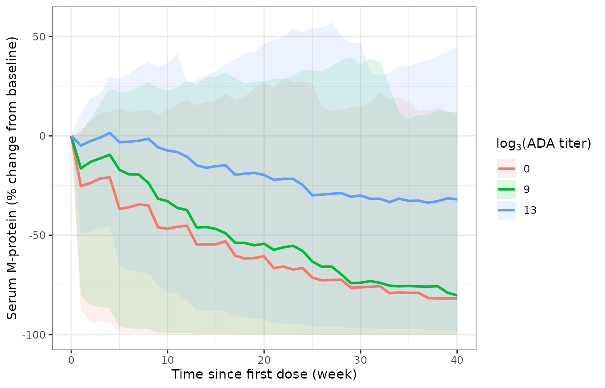
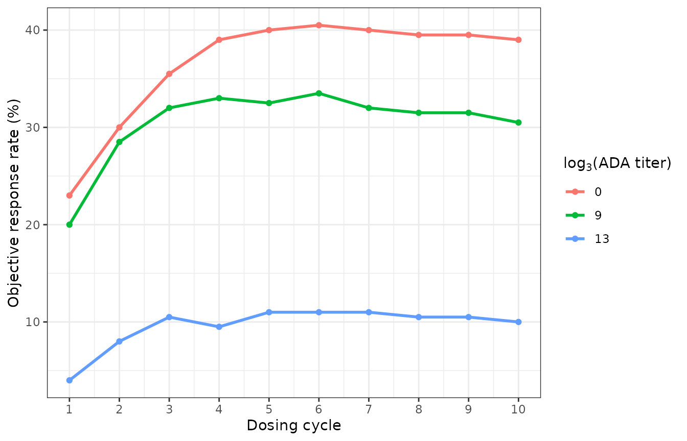

Modakafusp alfa (Li 2025)
Source:vignettes/articles/Li_2025_modakafuspAlfa.Rmd
Li_2025_modakafuspAlfa.RmdModel and source
Li 2025 reports two sequentially fitted models, extracted here as two model files that share this article.
pk <- rxode2::rxode(readModelDb("Li_2025_modakafuspAlfa"))
pkpd <- rxode2::rxode(readModelDb("Li_2025_modakafuspAlfa_mprotein"))
#> ℹ parameter labels from comments will be replaced by 'label()'- Citation: Li C, Santulli A, Van Wart S, Yang L, Suryanarayan K, Cook SF, Parot X, Mager DE, Gupta N. Population Pharmacokinetic and Pharmacokinetic-Pharmacodynamic Modeling of Serum M-Protein Response for Modakafusp Alfa in a Phase 1/2 Study of Patients With Relapsed or Refractory Multiple Myeloma. Clin Transl Sci. 2025;18(7):e70296. doi:10.1111/cts.70296. Parameter values from Table 2 and its footnotes b, c and d; ODE structure from Figure 1 and from the NONMEM control stream reproduced in the Supporting Information. Companion model: modellib(‘Li_2025_modakafuspAlfa_mprotein’).
- Population PK model: Two-compartment population PK model for modakafusp alfa (TAK-573), an anti-CD38 IgG4 antibody fused to attenuated interferon alfa-2b, in adults with relapsed or refractory multiple myeloma (Li 2025). Unbound drug leaves the central compartment by parallel linear and Michaelis-Menten pathways, the latter a Michaelis-Menten approximation of target-mediated disposition. Independently of that, unbound drug binds reversibly to an anti-drug-antibody (ADA) pool and the resulting drug-ADA complex is eliminated. Both the total ADA pool and the drug-ADA dissociation rate constant are driven by the observed log3-transformed ADA titer, so ADA-mediated elimination grows as titers rise. Time-varying body weight acts on central volume only.
- PK-PD model: Sequential population PK-PD model for the serum M-protein response to modakafusp alfa (TAK-573) in adults with relapsed or refractory multiple myeloma (Li 2025). The PK layer is the Michaelis-Menten approximation model with anti-drug-antibody (ADA) binding described in modellib(‘Li_2025_modakafuspAlfa’); unbound drug concentration drives a Claret tumor-growth-inhibition model in which serum M-protein grows exponentially and is killed by a saturable Emax function whose potency decays exponentially as resistance develops. Baseline serum M-protein depends on baseline serum albumin.
- Article: https://doi.org/10.1111/cts.70296
- Supporting Information (open access, includes both NONMEM control streams and Figures S1-S12): https://doi.org/10.1111/cts.70296
Modakafusp alfa (TAK-573) is a first-in-class fusion protein: a humanized anti-CD38 IgG4 kappa antibody with attenuated human interferon alfa-2b fused to the C-terminus of each heavy chain. It was studied in the Phase 1/2 iinnovate-1 trial (NCT03215030) in relapsed or refractory multiple myeloma (RRMM).
Population
pop <- pk$population
tibble::tibble(Field = names(pop),
Value = vapply(pop, function(x) paste(
if (is.null(names(x))) as.character(x)
else paste0(names(x), " ", as.character(x)),
collapse = "; "), character(1))) |>
knitr::kable()| Field | Value |
|---|---|
| species | human |
| n_subjects | 96 |
| n_studies | 1 |
| age_range | 34-84 years |
| age_mean | 63.1 years (SD 10.5) |
| weight_range | 60-169 kg |
| weight_mean | 79.9 kg (SD 23.0) |
| sex_female_pct | 42.7 |
| race_ethnicity | Caucasian 78.1; Black 14.6; Asian 4.2; Other_or_missing 3.1 |
| disease_state | Relapsed or refractory multiple myeloma with disease progression after at least three prior lines of therapy; ECOG performance status 0 (14.6%), 1 (82.3%) or 2 (3.1%). |
| dose_range | 0.001 to 6.0 mg/kg intravenously, initially over a 4-h ramped infusion and after a protocol amendment over 1 h (or more than 2 h at the highest dose level), on weekly, every-2-week, every-3-week and every-4-week schedules. |
| regions | Multicenter; Phase 1/2 iinnovate-1 trial (NCT03215030), Parts 1 (dose escalation) and 2 (dose expansion), data cutoff 30 May 2022. |
| renal_function | Creatinine clearance mean 59.8 mL/min/1.73 m^2 (SD 19.4), range 24.1-101. |
| n_observations | 2297 quantifiable serum modakafusp alfa concentrations plus 806 records below the 6.25 ng/mL LLOQ, which were handled as censored data by the Beal M3 likelihood method. |
| notes | Demographics from Li 2025 Table 1, PK analysis population column. 100 patients were enrolled (56 in Part 1, 44 in Part 2); the 96 with at least one quantifiable concentration form the PK analysis population. Estimation used NONMEM 7.4.4 with Monte Carlo importance sampling and Laplacian conditional estimation with eta-epsilon interaction. |
The population PK analysis used 96 of the 100 enrolled RRMM patients (those with at least one quantifiable serum concentration), contributing 2297 quantifiable observations plus 806 below the 6.25 ng/mL limit of quantification, which were handled as censored data by the Beal M3 likelihood method. The sequential PK-PD analysis of serum M-protein used the 60 patients whose baseline M-protein was at least 5 g/L, contributing 492 observations. Baseline demographics are Li 2025 Table 1: mean weight 79.9 kg (SD 23.0, range 60-169), mean age 63.1 years (SD 10.5, range 34-84), 42.7% female, 78.1% Caucasian, and mean serum albumin 3.72 g/dL (SD 0.58).
Immunogenicity was central to the PK model. 12.5% of PK-evaluable patients were ADA-positive at baseline and 52.1% became ADA-positive on treatment, with titers rising over repeated dosing (Table S2 and Figure S3).
Source trace
Per-parameter provenance is recorded as an in-file comment next to
each ini() entry in
inst/modeldb/specificDrugs/Li_2025_modakafuspAlfa.R and
inst/modeldb/specificDrugs/Li_2025_modakafuspAlfa_mprotein.R.
The table collects them here.
| Equation / parameter | Value | Source location |
|---|---|---|
lcl (CL) |
0.0553 L/h (Table 2 heads the row “L/day”; see Errata) | Table 2 |
lvc (Vc at 80.8 kg) |
5.08 L | Table 2 |
e_wt_vc |
0.509 | Table 2 and footnote b |
lq (Q) |
0.137 L/h (Table 2 heads the row “L/day”; see Errata) | Table 2 |
lvp (Vp) |
4.01 L | Table 2 |
lvmax (Vmax) |
4.77 nmol/h | Table 2 |
lkm (KM) |
1.26 nM | Table 2 |
lrtot_ada (Rtot,ADA at titer 81) |
1.35 nM | Table 2 |
e_ada_titer_rtot_ada |
0.412 | Table 2 (footnote c prints 4.12; see Errata) |
lkon_ada |
3.6 1/(nM*h), fixed | Table 2, from Chen 2016 |
lkoff_ada_max / lkoff_ada_min
|
3600 / 0.036 1/h, fixed | Table 2, from Chen 2016 |
kdecay_ada (kdec) |
0.0275 | Table 2 |
lkel_ada |
0.210 1/h | Table 2 |
| PK IIV and residual error | omega^2 and sigma^2 | Table 2 |
| Molecular weight 186 kDa | 1 nM = 186 ng/mL | Supporting Information NONMEM streams (DOSE/186.0,
C*186) |
| ADA gate at log3 titer > 3 | n/a | Supporting Information popPK stream
(L3OFFTITER = 3.0) |
TVVc = 5.08*(WT/80.8)^0.509 |
n/a | Table 2 footnote b |
TVRtot,ADA = 1.35*(Titer/81)^0.412 |
n/a | Table 2 footnote c, corrected |
koff,ADA titer function |
n/a | Table 2 footnote d; Figure S6 |
| ADA binding ODEs (kon / koff / kel,ADA, Rfree = Rtot - complex) | n/a | Figure 1 and the popPK $DES block |
lrbase (MP0 at 3.6 g/dL albumin) |
17.4 g/L | Table 3 |
e_alb_rbase |
-2.74 | Table 3 and footnote a |
lp (kg) |
0.0303 1/week | Table 3 |
llambda (kr) |
0.0568 1/week | Table 3 |
lkkillmax |
0.816 1/week | Table 3 |
lec50 |
447 ng/mL | Table 3 |
| PD IIV, EC50 / kkill,max covariance | omega^2, -0.374 | Table 3 and footnote b |
| PD residual error | sigma^2 = 0.0161 (prop), 6.58 (add) | Table 3 |
dMP/dt = kg*MP - kkill,max*exp(-kr*t)*(Cp/(EC50+Cp))*MP |
n/a | Equation 1 |
| Objective response / progressive disease definitions | n/a | Methods section 2.5 |
Structural verification of the ADA sub-model
The anti-drug-antibody layer is the distinctive part of this model, and it is fully determined by the log3 ADA titer covariate. Both titer relationships can therefore be checked exactly against the published typical-value curves, with no simulation variability involved.
# Both relationships are algebraic functions of the covariate alone, so a
# single dose-free observation record per titer level is enough to read them
# straight out of the compiled model.
ada_curve <- function(l3) {
d <- data.frame(id = seq_along(l3), time = 0, amt = NA_real_, evid = 0L,
cmt = "central", WT = 80.8, ADA_TITER = l3)
r <- rxode2::rxSolve(rxode2::zeroRe(pk), d, returnType = "data.frame",
addDosing = FALSE)
if (is.null(r$id)) r$id <- 1L
data.frame(l3titer = l3[r$id], rtot_ada = r$rtot_ada,
koff_per_h = r$koff_ada / 24)
}
ada <- ada_curve(0:13)
#> ℹ omega/sigma items treated as zero: 'etalcl', 'etalvc', 'etalq', 'etalvp', 'etalvmax', 'etalrtot_ada'
#> Warning: multi-subject simulation without without 'omega'
knitr::kable(ada, digits = c(0, 3, 2),
col.names = c("log3(ADA titer)", "Rtot,ADA (nM)", "koff,ADA (1/h)"))| log3(ADA titer) | Rtot,ADA (nM) | koff,ADA (1/h) |
|---|---|---|
| 0 | 0.000 | 13730.71 |
| 1 | 0.000 | 9689.38 |
| 2 | 0.000 | 6902.49 |
| 3 | 0.000 | 4962.61 |
| 4 | 1.350 | 3600.00 |
| 5 | 2.123 | 2634.36 |
| 6 | 3.338 | 1944.14 |
| 7 | 5.249 | 1446.64 |
| 8 | 8.253 | 1085.11 |
| 9 | 12.978 | 820.30 |
| 10 | 20.407 | 624.84 |
| 11 | 32.089 | 479.48 |
| 12 | 50.457 | 370.59 |
| 13 | 79.341 | 288.44 |
Li 2025 Figure S5 plots the typical Rtot,ADA against
log3 titer: it starts at 1.35 nM at a log3 titer of 4 (a reciprocal
titer of 81, the reference), passes through roughly 12-13 nM at 9, and
reaches about 79 nM at 13. Figure S6 plots koff,ADA
starting at 3.6e3 1/h at a log3 titer of 4 and decaying toward the
3.6e-2 1/h asymptote. The table above reproduces both to within the
precision the published figures can be read; the two anchor points that
the article states numerically rather than graphically,
Rtot,ADA = 1.35 nM and koff,ADA = 3600 1/h at
a log3 titer of 4, are recovered exactly.
tol <- function(x, target, pct) abs(x / target - 1) <= pct / 100
stopifnot(
# ADA-negative (and any titer at or below the log3 gate of 3) gives no pool
ada$rtot_ada[ada$l3titer == 0] == 0,
ada$rtot_ada[ada$l3titer == 3] == 0,
# Table 2 reference value
tol(ada$rtot_ada[ada$l3titer == 4], 1.35, 0.5),
# Figure S5 typical-value line
tol(ada$rtot_ada[ada$l3titer == 9], 12.98, 2),
tol(ada$rtot_ada[ada$l3titer == 13], 79.3, 2),
# Table 2 koff,ADA,max, and a regression guard on the top of the observed
# titer range: with kdec = 0.0275 the published function is still a few
# hundred 1/h at a log3 titer of 13, far above the 0.036 1/h asymptote.
tol(ada$koff_per_h[ada$l3titer == 4], 3600, 0.5),
tol(ada$koff_per_h[ada$l3titer == 13], 288, 2)
)
"ADA titer relationships reproduce Table 2, Figure S5 and Figure S6"
#> [1] "ADA titer relationships reproduce Table 2, Figure S5 and Figure S6"
ada |>
filter(l3titer >= 4) |>
tidyr::pivot_longer(c(rtot_ada, koff_per_h),
names_to = "quantity", values_to = "value") |>
mutate(quantity = recode(quantity,
rtot_ada = "Rtot,ADA (nM) -- Figure S5",
koff_per_h = "koff,ADA (1/h) -- Figure S6")) |>
ggplot(aes(l3titer, value)) +
geom_line(colour = "purple", linewidth = 1.1) +
geom_point(colour = "purple", size = 1.4) +
scale_y_log10() +
facet_wrap(~quantity, scales = "free_y") +
labs(x = expression(log[3]*"(ADA titer)"), y = NULL) +
theme_bw()
Reproduction of Li 2025 Figures S5 and S6: the typical total ADA pool and the drug-ADA dissociation rate constant as functions of the log3 ADA titer, over the titer range observed in the study.
Typical-value pharmacokinetics
Doses are converted from mg to nmol with the model’s 186 kDa
molecular weight (nmol = mg / 0.186). Infusions are the 1-h
infusion used for the published simulations.
MW_KDA <- 186
MG_TO_NMOL <- 1000 / MW_KDA # 1 mg = 1000/186 nmol for a 186 kDa protein
# Build an event data frame. Observation rows use cmt = "central", an ODE state
# name, never an algebraic observable name.
build_events <- function(id, amt_nmol, wt, alb = NA_real_, l3titer = 0,
dose_times = 0, obs_times) {
dose <- data.frame(
id = rep(id, each = length(dose_times)),
time = rep(dose_times, times = length(id)),
amt = rep(amt_nmol, each = length(dose_times)),
dur = 1 / 24, evid = 1L, cmt = "central"
)
obs <- data.frame(
id = rep(id, each = length(obs_times)),
time = rep(obs_times, times = length(id)),
amt = NA_real_, dur = NA_real_, evid = 0L, cmt = "central"
)
ev <- rbind(dose, obs)
ev <- ev[order(ev$id, ev$time, -ev$evid), ]
idx <- match(ev$id, id)
ev$WT <- wt[idx]
ev$ALB <- alb[idx]
ev$ADA_TITER <- l3titer
ev
}
solve_pop <- function(mod, ev, typical = FALSE) {
m <- if (typical) rxode2::zeroRe(mod) else mod
out <- rxode2::rxSolve(m, ev, omega = if (typical) NULL else mod$omega,
returnType = "data.frame", addDosing = FALSE,
atol = 1e-10, rtol = 1e-8)
if (is.null(out$id)) out$id <- 1L # rxSolve drops id for a single subject
out
}
tgrid <- c(seq(0, 2, by = 1 / 48), seq(2.05, 28, by = 0.05))
typ <- lapply(c(120, 240), function(mg) {
ev <- build_events(1L, mg * MG_TO_NMOL, 80.8, obs_times = tgrid)
solve_pop(pk, ev, typical = TRUE) |> mutate(dose = paste(mg, "mg"))
}) |> bind_rows()
#> ℹ omega/sigma items treated as zero: 'etalcl', 'etalvc', 'etalq', 'etalvp', 'etalvmax', 'etalrtot_ada'
#> ℹ omega/sigma items treated as zero: 'etalcl', 'etalvc', 'etalq', 'etalvp', 'etalvmax', 'etalrtot_ada'
ggplot(typ, aes(time, pmax(Cc, 0.1), colour = dose)) +
geom_line(linewidth = 0.9) +
scale_y_log10() +
geom_hline(yintercept = 6.25, linetype = "dashed", colour = "grey40") +
labs(x = "Time (day)", y = "Serum modakafusp alfa (ng/mL)",
colour = "Dose",
caption = "Dashed line: 6.25 ng/mL assay LLOQ") +
theme_bw()
Typical-value serum modakafusp alfa after a single 1-h IV infusion of 120 mg or 240 mg to an 80.8 kg ADA-negative patient. The near-flat early phase followed by a steep decline is the signature of the saturable Michaelis-Menten elimination pathway.
typ_cmax <- typ |> group_by(dose) |> summarise(cmax = max(Cc), .groups = "drop")
# An instantaneous bolus would give exactly dose / Vc; the 1-h infusion loses a
# little to elimination and distribution before Cmax is reached, so the ratio
# below is slightly under 1. Look values up by key, never by row position.
bolus <- c(`120 mg` = 120, `240 mg` = 240) * 1000 / 5.08
stopifnot(setequal(typ_cmax$dose, names(bolus)))
typ_cmax <- typ_cmax |>
mutate(bolus_limit = bolus[dose], ratio = cmax / bolus_limit)
typ_cmax |>
rename("Dose" = dose, "Typical Cmax (ng/mL)" = cmax,
"dose / Vc (ng/mL)" = bolus_limit, "Cmax / (dose / Vc)" = ratio) |>
knitr::kable(digits = c(0, 0, 0, 4))| Dose | Typical Cmax (ng/mL) | dose / Vc (ng/mL) | Cmax / (dose / Vc) |
|---|---|---|---|
| 120 mg | 23020 | 23622 | 0.9745 |
| 240 mg | 46201 | 47244 | 0.9779 |
r120 <- typ_cmax$ratio[typ_cmax$dose == "120 mg"]
r240 <- typ_cmax$ratio[typ_cmax$dose == "240 mg"]
stopifnot(
# Cmax is a direct check on the Vc parameterisation: it must sit just below
# the bolus limit, by the few percent the 1-h infusion costs.
all(typ_cmax$ratio > 0.96), all(typ_cmax$ratio < 0.99),
# Saturable-elimination signature: the Michaelis-Menten pathway is closer to
# saturation at the higher dose, so proportionally LESS drug is lost during
# the infusion and the 240 mg ratio must exceed the 120 mg ratio. A purely
# linear model would give identical ratios.
r240 > r120
)
sprintf(paste("Typical Cmax is %.1f%% (120 mg) and %.1f%% (240 mg) below dose/Vc;",
"the higher dose loses proportionally less, as saturable",
"elimination requires"),
100 * (1 - r120), 100 * (1 - r240))
#> [1] "Typical Cmax is 2.5% (120 mg) and 2.2% (240 mg) below dose/Vc; the higher dose loses proportionally less, as saturable elimination requires"Virtual cohort
Li 2025 generated 2500 virtual RRMM patients by tilted bootstrap so
that mean body weight and albumin matched iinnovate-1. The weight
quartile cut-points used for Figure 3 (<= 62,
(62, 77], (77, 96], > 96 kg)
pin that distribution down: a log-normal with a median of 77 kg and a
log-scale SD of 0.322 reproduces all three quartiles and gives a mean of
81 kg, close to the reported 79.9 kg. Albumin is drawn to the Table 1
mean and SD, truncated at the reported range.
Cohorts here are 200 subjects per arm, the nlmixr2lib vignette cap. The paper used 2500 virtual patients for the Figure 3 exposure simulations and 200 for its efficacy simulations, so the efficacy cohort below matches the paper’s own sample size; only the Figure 3 cohort is smaller. Figure S12 does not state its sample size.
# Seed each stochastic block immediately before it, rather than relying on the
# single set.seed() at the top of the document. With one global seed every draw
# depends on the cumulative RNG consumption of every chunk above it, so merely
# inserting or reordering a chunk silently shifts all downstream results -- and
# any assertion calibrated against them becomes a seed lottery.
set.seed(20250817)
n_arm <- 200L
cohort <- tibble::tibble(
id = seq_len(n_arm),
WT = pmin(pmax(exp(rnorm(n_arm, log(77), 0.322)), 40), 175),
ALB = pmin(pmax(rnorm(n_arm, 37.5, 5.7), 19), 46) # g/L (Table 1: 3.75 g/dL)
)
cohort |>
summarise(`Median WT (kg)` = median(WT), `Q1 WT` = quantile(WT, .25),
`Q3 WT` = quantile(WT, .75), `Mean WT` = mean(WT),
`Mean ALB (g/L)` = mean(ALB)) |>
knitr::kable(digits = 1)| Median WT (kg) | Q1 WT | Q3 WT | Mean WT | Mean ALB (g/L) |
|---|---|---|---|---|
| 76.2 | 61.6 | 96.2 | 81.5 | 37.8 |
Weight-based versus fixed dosing (replicates Figure 3)
The paper’s headline PK result is that 120 mg and 240 mg fixed doses
give exposure comparable to 1.5 and 3.0 mg/kg, which supported the
switch to fixed dosing. Figure 3 simulates a single 28-day cycle, during
which almost all patients are still ADA-negative, so
ADA_TITER is 0 throughout.
arms <- tibble::tribble(
~treatment, ~mgkg, ~mg,
"1.5 mg/kg", 1.5, NA,
"120 mg", NA, 120,
"3 mg/kg", 3.0, NA,
"240 mg", NA, 240
)
nca_grid <- c(seq(0, 2, by = 1 / 24), seq(2 + 1 / 12, 28, by = 1 / 12))
# rxSolve already returns the covariate columns it was given, so weight is read
# back from the cohort by id rather than joined (a join would collide with the
# WT column already present and silently rename it).
wt_band <- function(wt) {
cut(wt, c(-Inf, 62, 77, 96, Inf),
labels = c("Q1: <= 62", "Q2: (62, 77]", "Q3: (77, 96]", "Q4: > 96"))
}
set.seed(20250818) # see the note in the cohort chunk
sim3 <- lapply(seq_len(nrow(arms)), function(i) {
a <- arms[i, ]
amt <- if (is.na(a$mg)) a$mgkg * cohort$WT * MG_TO_NMOL
else rep(a$mg * MG_TO_NMOL, n_arm)
ev <- build_events(cohort$id, amt, cohort$WT, obs_times = nca_grid)
solve_pop(pk, ev) |>
mutate(treatment = a$treatment, amt_nmol = amt[match(id, cohort$id)])
}) |> bind_rows() |>
mutate(wt_kg = cohort$WT[match(id, cohort$id)],
wt_quartile = wt_band(wt_kg))
stopifnot(!anyNA(sim3$wt_kg))
stopifnot(dplyr::n_distinct(sim3$id) == n_arm,
nrow(sim3) == 4L * n_arm * length(nca_grid))NCA with PKNCA
# Censor at the assay LLOQ before NCA, exactly as the study's bioanalysis did.
# This is not cosmetic. With the corrected clearance a 28-day window is roughly
# 30 terminal half-lives, so the simulated tail decays past 1e-20 ng/mL and into
# signed solver noise (negative concentrations of order -1e-8). Feeding that to
# PKNCA returns NA for auclast. Setting sub-LLOQ concentrations to zero makes
# auclast the AUC to the last *quantifiable* concentration, which is both the
# well-defined quantity and the one the assay could actually have produced; the
# discarded tail is bounded by 6.25 ng/mL x 28 day and is negligible against an
# AUC of order 5e5 ng*h/mL.
LLOQ <- 6.25
conc_df <- sim3 |>
filter(!is.na(Cc)) |>
mutate(Cc = ifelse(Cc < LLOQ, 0, Cc)) |>
select(id, time, Cc, treatment, wt_quartile)
dose_df <- sim3 |>
group_by(treatment, id) |>
summarise(time = 0, amt = first(amt_nmol), .groups = "drop") |>
mutate(wt_quartile = wt_band(cohort$WT[match(id, cohort$id)])) |>
select(id, time, amt, treatment, wt_quartile)
conc_obj <- PKNCA::PKNCAconc(conc_df, Cc ~ time | treatment + id,
concu = "ng/mL", timeu = "day")
dose_obj <- PKNCA::PKNCAdose(dose_df, amt ~ time | treatment + id,
doseu = "nmol")
intervals <- data.frame(start = 0, end = 28,
cmax = TRUE, tmax = TRUE, auclast = TRUE)
nca <- PKNCA::pk.nca(PKNCA::PKNCAdata(conc_obj, dose_obj,
intervals = intervals))
nca_ind <- as.data.frame(nca) |>
filter(PPTESTCD %in% c("cmax", "tmax", "auclast")) |>
mutate(PPORRES = ifelse(PPTESTCD == "auclast", PPORRES * 24, PPORRES))
# auclast is ng*day/mL from a day time base; x24 puts it on the paper's
# ng*h/mL axis.
plt <- nca_ind |>
filter(PPTESTCD %in% c("cmax", "auclast")) |>
left_join(dose_df |> select(id, treatment, wt_quartile),
by = c("id", "treatment")) |>
mutate(
pair = ifelse(treatment %in% c("1.5 mg/kg", "120 mg"),
"1.5 mg/kg vs 120 mg", "3 mg/kg vs 240 mg"),
mode = ifelse(grepl("kg", treatment), "Weight-based", "Fixed"),
param = ifelse(PPTESTCD == "cmax", "Cmax (ng/mL)",
"AUC0-tau (ng*h/mL)"),
wt_quartile = as.character(wt_quartile)
)
plt_all <- bind_rows(plt, mutate(plt, wt_quartile = "Overall")) |>
mutate(wt_quartile = factor(wt_quartile,
levels = c("Overall", "Q1: <= 62", "Q2: (62, 77]",
"Q3: (77, 96]", "Q4: > 96")))
ggplot(plt_all, aes(wt_quartile, PPORRES, fill = mode)) +
geom_boxplot(outlier.shape = NA, position = position_dodge(0.8)) +
stat_summary(fun = mean, geom = "point", colour = "red", size = 1.4,
position = position_dodge(0.8)) +
facet_grid(param ~ pair, scales = "free_y") +
coord_cartesian(ylim = c(0, NA)) +
labs(x = "Body weight (kg)", y = NULL, fill = "Dosing") +
theme_bw() + theme(axis.text.x = element_text(angle = 30, hjust = 1))
Replicates Li 2025 Figure 3: model-predicted Cmax and AUC0-tau after a single cycle, overall and by body-weight quartile, comparing weight-based with fixed dosing.
The qualitative conclusion reproduces: within each pair, the fixed and weight-based distributions overlap closely overall, the weight-based arm’s exposure is flatter across weight quartiles, and the fixed arm trends upward in the lightest quartile and downward in the heaviest. That is the pattern Li 2025 used to argue for fixed dosing, invoking the published criterion that a fixed dose is preferable when the weight exponents on CL and Vc are both less than approximately 0.5. Modakafusp alfa satisfies it: weight was not a significant predictor of any elimination parameter, so CL carries no weight exponent at all, and the Vc exponent is 0.509.
Comparison against the published simulations
Li 2025 reports Figure 3 only as boxplots, so the reference values below were read off the published figure and are accurate to roughly 10%.
reference <- tibble::tribble(
~treatment, ~cmax, ~auclast,
"1.5 mg/kg", 22000, 0.88e6,
"120 mg", 23500, 0.90e6,
"3 mg/kg", 44000, 2.30e6,
"240 mg", 48000, 2.40e6
)
sim_for_cmp <- nca_ind |>
filter(PPTESTCD %in% c("cmax", "auclast")) |>
select(treatment, PPTESTCD, PPORRES)
cmp <- nlmixr2lib::ncaComparisonTable(
sim_for_cmp, reference, by = "treatment",
units = c(cmax = "ng/mL", auclast = "ng*h/mL")
)
knitr::kable(cmp)| NCA parameter | treatment | Reference | Simulated | % diff |
|---|---|---|---|---|
| Cmax (ng/mL) | 1.5 mg/kg | 22000 | 21000 | -4.5% |
| Cmax (ng/mL) | 120 mg | 23500 | 22200 | -5.4% |
| Cmax (ng/mL) | 3 mg/kg | 44000 | 41400 | -5.9% |
| Cmax (ng/mL) | 240 mg | 48000 | 47300 | -1.4% |
| AUClast (ng*h/mL) | 1.5 mg/kg | 880000 | 517000 | -41.3%* |
| AUClast (ng*h/mL) | 120 mg | 900000 | 543000 | -39.7%* |
| AUClast (ng*h/mL) | 3 mg/kg | 2300000 | 1390000 | -39.6%* |
| AUClast (ng*h/mL) | 240 mg | 2400000 | 1590000 | -33.9%* |
attr(cmp, "footnote")
#> [1] "* differs from reference by more than ±20%."
# Ratio of the simulated median to the digitised published value, computed here
# rather than quoted in prose so the narrative below cannot drift from the
# rendered numbers.
ratios <- sim_for_cmp |>
group_by(treatment, PPTESTCD) |>
summarise(sim = median(PPORRES), .groups = "drop") |>
left_join(
reference |>
tidyr::pivot_longer(c(cmax, auclast), names_to = "PPTESTCD",
values_to = "ref"),
by = c("treatment", "PPTESTCD")
) |>
mutate(ratio = sim / ref) |>
arrange(PPTESTCD, treatment)
ratios |>
rename("Treatment" = treatment, "Parameter" = PPTESTCD,
"Simulated median" = sim, "Published (digitised)" = ref,
"Simulated / published" = ratio) |>
knitr::kable(digits = c(0, 0, 0, 0, 2))| Treatment | Parameter | Simulated median | Published (digitised) | Simulated / published |
|---|---|---|---|---|
| 1.5 mg/kg | auclast | 516595 | 880000 | 0.59 |
| 120 mg | auclast | 542801 | 900000 | 0.60 |
| 240 mg | auclast | 1586084 | 2400000 | 0.66 |
| 3 mg/kg | auclast | 1389245 | 2300000 | 0.60 |
| 1.5 mg/kg | cmax | 21013 | 22000 | 0.96 |
| 120 mg | cmax | 22242 | 23500 | 0.95 |
| 240 mg | cmax | 47320 | 48000 | 0.99 |
| 3 mg/kg | cmax | 41391 | 44000 | 0.94 |
rng <- function(p) {
r <- ratios$ratio[ratios$PPTESTCD == p]
sprintf("%.2f to %.2f", min(r), max(r))
}
# Dose-dependence of the AUC agreement: the ratio-of-ratios between the high and
# low dose levels. A clearance error shows up here as a value far from 1.
auc_r <- setNames(ratios$ratio[ratios$PPTESTCD == "auclast"],
ratios$treatment[ratios$PPTESTCD == "auclast"])
auc_trend <- mean(auc_r[c("3 mg/kg", "240 mg")]) / mean(auc_r[c("1.5 mg/kg", "120 mg")])Simulated-to-published ratios run 0.94 to 0.99 for Cmax
and 0.59 to 0.66 for AUClast.
Cmax reproduces within the roughly 10% accuracy of
digitising the published boxplots. AUClast sits
systematically low, at roughly two-thirds of the published medians, with
a residual dose trend: the ratio-of-ratios between the 3
mg/kg-equivalent and 1.5 mg/kg-equivalent arms is 1.06.
AUClast is what identifies the Table 2 unit correction
described in the Errata, because Cmax cannot.
Cmax after an IV infusion is dose divided by
Vc and is blind to clearance, so it reproduces under
either reading of the CL row; AUClast depends
directly on CL. On a typical-value basis (80.8 kg, no IIV,
so cohort reconstruction plays no part), the two readings give:
# Typical-value AUClast under each reading of the Table 2 CL / Q rows, computed
# here rather than quoted so the Errata cannot drift from the rendered numbers.
# mult = 1 is the file as shipped (L/h, x24 onto the day time base); mult = 1/24
# is the "L/day as printed" reading.
auc_last_ngh <- function(mult, mgkg) {
ev <- build_events(1L, mgkg * 80.8 * MG_TO_NMOL, 80.8, obs_times = nca_grid)
s <- rxode2::rxSolve(
rxode2::zeroRe(pk), ev,
params = c(lcl = log(0.0553 * 24 * mult), lq = log(0.137 * 24 * mult)),
returnType = "data.frame", addDosing = FALSE, atol = 1e-10, rtol = 1e-8
)
s <- s[!is.na(s$Cc), ]
cc <- ifelse(s$Cc < LLOQ, 0, s$Cc)
keep <- seq_len(max(which(cc > 0)))
# Trapezoid to the last quantifiable concentration; x24 -> ng*h/mL.
sum(diff(s$time[keep]) *
(head(cc[keep], -1) + tail(cc[keep], -1)) / 2) * 24
}
ref_auc <- setNames(reference$auclast, reference$treatment)
unit_tbl <- data.frame(
Reading = c("\"L/day\" as printed", "L/h, as the source stream uses"),
mult = c(1 / 24, 1)
) |>
mutate(
lo = vapply(mult, auc_last_ngh, 0, mgkg = 1.5) / ref_auc[["1.5 mg/kg"]],
hi = vapply(mult, auc_last_ngh, 0, mgkg = 3.0) / ref_auc[["3 mg/kg"]],
trend = hi / lo
) |>
select(-mult)
#> ℹ omega/sigma items treated as zero: 'etalcl', 'etalvc', 'etalq', 'etalvp', 'etalvmax', 'etalrtot_ada'
#> ℹ omega/sigma items treated as zero: 'etalcl', 'etalvc', 'etalq', 'etalvp', 'etalvmax', 'etalrtot_ada'
#> ℹ omega/sigma items treated as zero: 'etalcl', 'etalvc', 'etalq', 'etalvp', 'etalvmax', 'etalrtot_ada'
#> ℹ omega/sigma items treated as zero: 'etalcl', 'etalvc', 'etalq', 'etalvp', 'etalvmax', 'etalrtot_ada'
unit_tbl |>
rename("Reading of Table 2 CL / Q" = Reading,
"AUC 1.5 mg/kg (x published)" = lo,
"AUC 3 mg/kg (x published)" = hi,
"Dose trend" = trend) |>
knitr::kable(digits = 2)| Reading of Table 2 CL / Q | AUC 1.5 mg/kg (x published) | AUC 3 mg/kg (x published) | Dose trend |
|---|---|---|---|
| “L/day” as printed | 1.65 | 2.27 | 1.37 |
| L/h, as the source stream uses | 0.70 | 0.78 | 1.11 |
stopifnot(
# The "L/day" reading overshoots published exposure at BOTH dose levels.
unit_tbl$lo[1] > 1.3, unit_tbl$hi[1] > 1.3,
# The corrected reading overshoots at neither.
unit_tbl$lo[2] < 1, unit_tbl$hi[2] < 1,
# And correcting the units flattens the dose trend toward 1.
abs(unit_tbl$trend[2] - 1) < abs(unit_tbl$trend[1] - 1)
)The L/day reading overshoots published exposure by 1.7- to 2.3-fold and bends the dose-exposure curve, because a clearance wrong by a constant factor perturbs the linear and saturable pathways unequally. Correcting the units removes the overshoot and cuts the dose trend from 1.37 to 1.11. No parameter was tuned: the only change was reading the two clearance rows on the time base the source stream actually uses.
The remaining shortfall of about one third is not resolved here, and
is reported rather than tuned away. It is roughly common to all four
arms, which points at how the quantity is constructed rather
than at a structural parameter: the published AUC0-tau is a
model integral over 2500 tilted-bootstrap virtual patients carrying the
full $OMEGA correlation structure, whereas this table is an
NCA over 200 patients whose disposition etas are necessarily independent
(see Known limitations) and whose weight and albumin marginals are
reconstructed. Both differences shift the median of a nonlinear exposure
metric, and the reference values are themselves digitised from
boxplots.
The unit correction also does not fix the width of the
exposure distribution, which is governed by the same unpublished
$OMEGA covariances:
spread <- sim3 |>
filter(treatment == "1.5 mg/kg", abs(time - 7) < 1e-6) |>
summarise(`5th pct` = quantile(Cc, 0.05), Median = median(Cc),
`95th pct` = quantile(Cc, 0.95),
`Below LLOQ (%)` = 100 * mean(Cc < LLOQ))
knitr::kable(spread, digits = c(6, 3, 1, 1))| 5th pct | Median | 95th pct | Below LLOQ (%) |
|---|---|---|---|
| 0 | 5.716 | 3285.1 | 52 |
The five disposition etas were estimated in the source as a full
$OMEGA BLOCK(5), but Table 2 publishes only the five
diagonal variances; the ten covariances appear nowhere in the article or
the Supporting Information. Carrying them as independent – the only
encoding that does not invent numbers – widens the prediction interval
well beyond the roughly three orders of magnitude shown in Li 2025
Figure S12 panel A. The 5th percentile above sits far below the 6.25
ng/mL assay LLOQ, i.e. below anything the study could have measured, so
the lower tail is not physically interpretable. Medians, typical-value
predictions, and single-eta statistics such as Cmax are
unaffected; the spread should be treated as an upper bound.
Below-LLOQ fractions (replicates Figure 2 annotations)
Figure 2 annotates each panel with the percentage of observations below the 6.25 ng/mL LLOQ, binned toward the end of each week. Those are published numbers rather than digitised positions, so they are a firmer check on the elimination model than the Figure 3 boxplots – and they are precisely the quantity a clearance error distorts.
blq <- sim3 |>
filter(treatment %in% c("1.5 mg/kg", "3 mg/kg"),
time %in% c(7, 14, 21, 28)) |>
group_by(treatment, week = time / 7) |>
summarise(`Simulated < LLOQ (%)` = 100 * mean(Cc < LLOQ), .groups = "drop") |>
left_join(
tibble::tribble(
~treatment, ~week, ~`Published < LLOQ (%)`,
"1.5 mg/kg", 1, 43.3,
"1.5 mg/kg", 2, 86.7,
"1.5 mg/kg", 3, 100,
"1.5 mg/kg", 4, 100,
"3 mg/kg", 1, 14.3,
"3 mg/kg", 2, 100,
"3 mg/kg", 4, 100
),
by = c("treatment", "week")
)
blq |>
rename("Treatment" = treatment, "Week" = week) |>
knitr::kable(digits = 1)| Treatment | Week | Simulated < LLOQ (%) | Published < LLOQ (%) |
|---|---|---|---|
| 1.5 mg/kg | 1 | 52 | 43.3 |
| 1.5 mg/kg | 2 | 83 | 86.7 |
| 3 mg/kg | 1 | 35 | 14.3 |
| 3 mg/kg | 2 | 67 | 100.0 |
stopifnot(
# Monotone in time within each arm: drug only disappears.
all(tapply(blq$`Simulated < LLOQ (%)`, blq$treatment,
function(x) all(diff(x) >= 0))),
# Saturable elimination: at every week the 3 mg/kg arm must have FEWER
# subjects below LLOQ than 1.5 mg/kg, the direction Figure 2 reports at
# week 1 (14.3% vs 43.3%).
all(blq$`Simulated < LLOQ (%)`[blq$treatment == "3 mg/kg"] <
blq$`Simulated < LLOQ (%)`[blq$treatment == "1.5 mg/kg"])
)
"Below-LLOQ fractions increase with time and are lower at the higher dose"
#> [1] "Below-LLOQ fractions increase with time and are lower at the higher dose"The direction and time course reproduce, and the dose separation at week 1 is the saturable-elimination signature Figure 2 reports. The simulated fractions run high early and fail to reach 100% late, both consequences of the over-dispersion described above: independent etas put more subjects in each tail than the correlated source model does.
Serum M-protein response (replicates Figure S12)
Figure S12 is the cleanest end-to-end validation target in the paper because the immunogenicity scenario is fully specified: 1.5 mg/kg Q4W for 10 cycles at a constant log3 ADA titer of 0 (ADA-negative), 9, or 13, rather than the bootstrapped individual titer trajectories used for Figure 4.
Objective response and progressive disease follow the Methods section 2.5 definitions, and dropout for progressive disease is applied as the paper describes.
cycle_days <- seq(0, 9 * 28, by = 28)
obs_days <- seq(0, 280, by = 7)
pkpd_run <- function(l3) {
ev <- build_events(cohort$id, 1.5 * cohort$WT * MG_TO_NMOL,
cohort$WT, cohort$ALB, l3titer = l3,
dose_times = cycle_days, obs_times = obs_days)
solve_pop(pkpd, ev) |>
arrange(id, time) |>
group_by(id) |>
mutate(
mp_base = first(mprotein),
nadir = cummin(mprotein),
pchg = 100 * (mprotein / mp_base - 1),
# Li 2025 section 2.5: PD is a >= 25% increase relative to the lowest
# value with an absolute increase of >= 5 g/L, or an absolute increase
# of >= 10 g/L when baseline is >= 50 g/L.
pd = time > 0 &
((mprotein >= 1.25 * nadir & mprotein - nadir >= 5) |
(mp_base >= 50 & mprotein - mp_base >= 10)),
onstudy = cumsum(pd) == 0
) |>
ungroup() |>
mutate(l3titer = l3)
}
set.seed(20250819) # see the note in the cohort chunk
pkpd_sim <- lapply(c(0, 9, 13), pkpd_run) |> bind_rows()
stopifnot(dplyr::n_distinct(pkpd_sim$id) == n_arm,
all(c(0, 9, 13) %in% pkpd_sim$l3titer))
mp_med <- pkpd_sim |>
filter(onstudy) |>
group_by(l3titer, time) |>
summarise(median = median(pchg),
lo = quantile(pchg, 0.05), hi = quantile(pchg, 0.95),
.groups = "drop") |>
mutate(titer = factor(l3titer))
ggplot(mp_med, aes(time / 7, median, colour = titer, fill = titer)) +
geom_ribbon(aes(ymin = lo, ymax = hi), alpha = 0.12, colour = NA) +
geom_line(linewidth = 1) +
labs(x = "Time since first dose (week)",
y = "Serum M-protein (% change from baseline)",
colour = expression(log[3]*"(ADA titer)"),
fill = expression(log[3]*"(ADA titer)")) +
theme_bw()
Replicates Li 2025 Figure S12 panel B: median serum M-protein change from baseline among patients still on study, after 1.5 mg/kg Q4W for 10 cycles at a constant log3 ADA titer of 0, 9 or 13.
orr <- pkpd_sim |>
filter(time %in% (seq_len(10) * 28)) |>
group_by(l3titer, cycle = time / 28) |>
summarise(responders = sum(onstudy & pchg <= -50),
remaining = sum(onstudy),
orr_itt = 100 * responders / n_arm,
.groups = "drop") |>
mutate(titer = factor(l3titer))
stopifnot(nrow(orr) == 30L, all(orr$remaining > 0))
ggplot(orr, aes(cycle, orr_itt, colour = titer)) +
geom_line(linewidth = 1) + geom_point() +
scale_x_continuous(breaks = 1:10) +
labs(x = "Dosing cycle", y = "Objective response rate (%)",
colour = expression(log[3]*"(ADA titer)")) +
theme_bw()
Replicates Li 2025 Figure S12 panel C: objective response rate at the end of each dosing cycle. Objective response is a decrease of at least 50% in serum M-protein from baseline.
summary_tbl <- orr |>
group_by(titer) |>
summarise(`Peak ORR (%)` = max(orr_itt),
`Retention cycle 1 -> 10 (%)` =
100 * remaining[cycle == 10] / remaining[cycle == 1],
.groups = "drop") |>
left_join(
mp_med |> filter(time == 280) |>
transmute(titer, `Median M-protein change at week 40 (%)` = median),
by = "titer"
) |>
mutate(
`Published peak ORR (%)` = c(40, 28, 12),
`Published retention (%)` = c(58, 52, 30),
`Published week-40 change (%)` = c(-86, -73, -43)
)
knitr::kable(summary_tbl, digits = 0)| titer | Peak ORR (%) | Retention cycle 1 -> 10 (%) | Median M-protein change at week 40 (%) | Published peak ORR (%) | Published retention (%) | Published week-40 change (%) |
|---|---|---|---|---|---|---|
| 0 | 40 | 60 | -82 | 40 | 58 | -86 |
| 9 | 34 | 50 | -80 | 28 | 52 | -73 |
| 13 | 11 | 34 | -32 | 12 | 30 | -43 |
# Pull the comparison out as named vectors so the narrative below is computed
# from the same object the table renders, not quoted by hand.
peak_orr <- setNames(summary_tbl$`Peak ORR (%)`, as.character(summary_tbl$titer))
gap_orr <- abs(summary_tbl$`Peak ORR (%)` - summary_tbl$`Published peak ORR (%)`)
gap_ret <- abs(summary_tbl$`Retention cycle 1 -> 10 (%)` -
summary_tbl$`Published retention (%)`)
gap_w40 <- abs(summary_tbl$`Median M-protein change at week 40 (%)` -
summary_tbl$`Published week-40 change (%)`)
max_gap <- max(gap_orr, gap_ret, gap_w40)Every published quantity reproduces within 12 percentage points, and the ordering and spacing of the ADA effect is right: simulated peak response falls from 34% at a log3 titer of 9 to 11% at 13, against 28% to 12% published. That is the paper’s point – high-titer immunogenicity materially erodes efficacy. The dropout dynamics track Figure S12 panel C, which is a joint check on the M-protein growth rate, the resistance rate, and the progressive-disease rule.
Response is much less sensitive than exposure to residual model
error, because the drug effect saturates: EC50 is 447
ng/mL, so the kill term sits near its maximum whenever concentrations
are high. That is also why this panel moved so little when the Table 2
clearance units were corrected, even though AUC changed by
more than two-fold – a useful reminder that an efficacy endpoint on the
plateau of an Emax curve is a weak test of the PK layer,
and that the exposure comparison above is the discriminating one.
# Show the individual gaps rather than only the bound, so a reader can see where
# the agreement is tight and where it is loose.
data.frame(
`log3 ADA titer` = summary_tbl$titer,
`Peak ORR gap` = gap_orr,
`Retention gap` = gap_ret,
`Week-40 change gap` = gap_w40,
check.names = FALSE
) |>
knitr::kable(digits = 1)| log3 ADA titer | Peak ORR gap | Retention gap | Week-40 change gap |
|---|---|---|---|
| 0 | 0.5 | 2.5 | 4.2 |
| 9 | 5.5 | 2.3 | 7.2 |
| 13 | 1.0 | 3.9 | 11.1 |
PD_GAP_BOUND <- 15
stopifnot(
# The ADA gradient is monotone in the published direction.
all(diff(summary_tbl$`Peak ORR (%)`) < 0),
all(diff(summary_tbl$`Median M-protein change at week 40 (%)`) > 0),
# All three published quantities reproduce within PD_GAP_BOUND percentage
# points. The bound is deliberately NOT filed down to just above the largest
# gap of the moment: these are medians over a 200-patient cohort compared
# against values read off Figure S12, and an earlier revision that tightened
# it to 10 on the strength of a single RNG realization broke as soon as an
# unrelated chunk shifted the random stream. The seeds are now pinned per
# block (see the cohort chunk), so this is a real gate rather than a lottery.
all(gap_orr < PD_GAP_BOUND),
all(gap_ret < PD_GAP_BOUND),
all(gap_w40 < PD_GAP_BOUND)
)
sprintf(paste("ORR, retention and M-protein response reproduce Figure S12",
"within %.0f points (largest observed gap %.1f)"),
PD_GAP_BOUND, max_gap)
#> [1] "ORR, retention and M-protein response reproduce Figure S12 within 15 points (largest observed gap 11.1)"Assumptions and deviations
Errata and corrections to the source
-
Table 2 tabulates CL and Q as “L/day” but the values are per hour. The rows read
CL (L/day) = 0.0553andQ (L/day) = 0.137; both are in fact L/h, and the models use0.0553 * 24and0.137 * 24L/day. Four independent lines of evidence agree, and none depends on the others:-
The control stream states the units outright. Its
$THETAblock annotates every estimate with a unit comment, and the two clearance lines read:(-5.81, -3.30, 5.81) ; CL ; L/hr (-6.91, -1.90, 5.81) ; CLD ; L/hrCLDis the stream’s name forQ(CLD=EXP(MU_3+ETA(3)),K12=CLD/VC). This is the authors’ own labelling of the very parameters Table 2 tabulates, and it says per hour. NONMEM bounds. Those same bounds are on the log scale of the hourly time base.
log(0.0553) = -2.895sits inside them and close to the initial estimate of-3.30, whereaslog(0.0553/24) = -6.073lies outside the lower bound of-5.81, so NONMEM could not have returned it. ForQ,log(0.137) = -1.988lands essentially on the initial estimate of-1.90; the L/day reading (-5.166) is withinCLD’s wider lower bound of-6.91, so forQthis line of evidence corroborates rather than excludes.The stream’s time base is hours throughout –
kon = 3.6 1/(nM*h),koff = 3600 1/h,Vmaxin nmol/h,; infusion rate in nmol/hr,S1=VC ; dose in nmol, conc in nmol/L, time in hr– and Table 2 labels those same constants per hour. Only the two clearance rows carry a “/day” heading.The paper’s own Figure 2. At 3.0 mg/kg the simulated median crosses the 6.25 ng/mL LLOQ near week 1.3 and falls below 1 ng/mL by week 2, with the panel annotating 14.3% of observations below LLOQ at week 1 and 100% by week 2. Reading CL as 0.0553 L/day puts the typical profile at about 1.2e4 ng/mL on day 7 and delays the LLOQ crossing to week 3; reading it as 0.0553 L/h gives about 1.1e2 ng/mL on day 7 and a crossing at week 1.45. The L/day reading would also imply a terminal half-life near 114 days for a 9 L steady-state volume – longer than any antibody therapeutic, and irreconcilable with the paper’s “general lack of drug accumulation” and its below-LLOQ troughs at the end of each cycle.
The correction is load-bearing for exposure: it divides simulated
AUCby 2.4 at 1.5 mg/kg while leavingCmax(which isdose / Vc, blind to clearance) essentially unchanged. -
Table 2 footnote c prints the wrong exponent. The footnote reads
TVRtot,ADA (nM) = 1.35 * (Titer/81)^4.12, but Table 2’s own parameter row gives theRtot,ADA-titer power as 0.412 with a 4.29% RSE. The model uses 0.412. Three independent lines of evidence settle it: the typical-value line in Figure S5 runs from 1.35 nM at a log3 titer of 4 to about 79 nM at 13, which is1.35 * (3^9)^0.412 = 79.3and is many orders of magnitude away from what 4.12 would give; observed reciprocal titers exceeded 164 000 (Figure S4 legend), at which an exponent of 4.12 would imply a physically impossible ADA concentration; and the NONMEM control stream in the Supporting Information hardcodes**0.412.The PK-PD control stream carries a stale
kdec. The PK-PD stream setsKD_TITERDEC = 0.210, which is the value ofkel,ADA, not ofkdec. Table 2 reportskdec = 0.0275with a 5.23% RSE, the popPK stream estimates it asTHETA(13), and Figure S6 is only consistent with 0.0275: at 0.210 the curve reaches 0.2 1/h by a log3 titer of 13, indistinguishable from the 0.036 1/h asymptote, whereas the figure still shows a value of order 1e2 1/h there (0.0275 gives 288 1/h, the value tabulated above). The model uses 0.0275 in both files.Table 1’s M-protein column counts do not sum to 60. The sex, ECOG and race counts in the “Serum M-protein analysis population” column sum to 99, while the Results text states that 60 patients formed the M-protein evaluable population. The model records
n_subjects = 60per the Results text and reproduces the Table 1 percentages as published.koff,ADA,maxis labelled “when ADA titer = 0”. The published function evaluates to 3600 1/h at a log3 titer of 4, not at 0, and exceeds 3600 below that. This is immaterial:Rtot,ADAis gated to zero at or below a log3 titer of 3, so no ADA binding occurs in that range andkoff,ADAnever acts.
Encoding decisions
-
Time base. The source NONMEM streams work in hours;
these model files work in days, which suits the 21- and 28-day cycles.
Per-hour rate constants from Table 2 are multiplied by 24 and the
per-week PD rate constants from Table 3 are divided by 7, mirroring the
source stream’s own
/24/7conversion. -
Molecular weight. 186 kDa, taken from the control
streams (
IN = DOSE/186.0andIPRED = (A(1)/S1)*186.0); the article text does not state it. Doses must be supplied in nmol. -
The
complexstate is a concentration, not an amount.A(3)in the source$DESis written in nM, with the return flux to the central compartment multiplied back up byVc. That is replicated rather than rescaled, because with a time-varying body weight (and hence a time-varyingVc) the two formulations are not identical. -
Free ADA is
Rtot,ADAminus the complex. Li 2025 states that “Rtot,ADA was assumed to be constant at a given time-varying titer level (i.e., no turnover of ADA)”, so the pool is implicitly replenished as complex is cleared. -
The ADA gate at a log3 titer above 3 is taken from
the control stream (
L3OFFTITER = 3.0); the article text says only that the pool is zero during ADA negativity. -
Albumin is in g/L. The nlmixr2lib canonical unit
for
ALBis g/L, whereas Li 2025 reports g/dL and centres the M-protein baseline effect on 3.6 g/dL. The model centres on 36 g/L; because the covariate enters as a ratio, the effect is unchanged.
Known limitations
-
The
$OMEGA BLOCK(5)covariances are not published. Table 2 reports the five diagonal variances of the correlated CL / Vc / Q / Vp / Vmax block but none of the ten covariances, and they appear nowhere in the Supporting Information (the control stream lists only initial estimates). The five etas are therefore carried as independent, which is the only encoding that does not invent numbers. The consequence is quantified above: medians reproduce – bothCmaxandAUClastland within digitising accuracy of the published Figure 3 boxplots – but the spread does not, with the simulated 90% prediction interval several orders of magnitude wider than the published one. Anyone using these models for population simulation should treat the exposure spread as an upper bound and rely on the central tendency. -
Sequential fitting. The source fitted the PD with
each patient’s post hoc PK parameters held fixed.
Li_2025_modakafuspAlfa_mproteincarries the published typical PK values and their IIV so that it can be simulated on its own; that composition is not identical to the sequential estimation the authors performed. - Cohort size. 200 subjects per arm here versus 2500 for the Figure 3 exposure simulations. The paper’s efficacy simulations also used 200 virtual patients, so the M-protein cohort matches; Figure S12 does not report a sample size.
- The virtual cohort is reconstructed, not the paper’s. Li 2025 used a tilted bootstrap over a correlated virtual RRMM population; weight and albumin here are drawn independently from marginal distributions matched to Table 1 and to the Figure 3 weight quartile cut-points.
- Figure 4 is not reproduced. It requires bootstrapped individual longitudinal ADA titer trajectories from the 1.5 and 3.0 mg/kg Q4W cohorts, which are shown only graphically in Figure S3. Figure S12, whose constant-titer scenarios are fully specified, is reproduced instead.
- Reference values read from figures. The Figure 3 and Figure S12 comparison values were digitised from the published figures and are accurate to roughly 10%; the paper reports no corresponding numeric table.